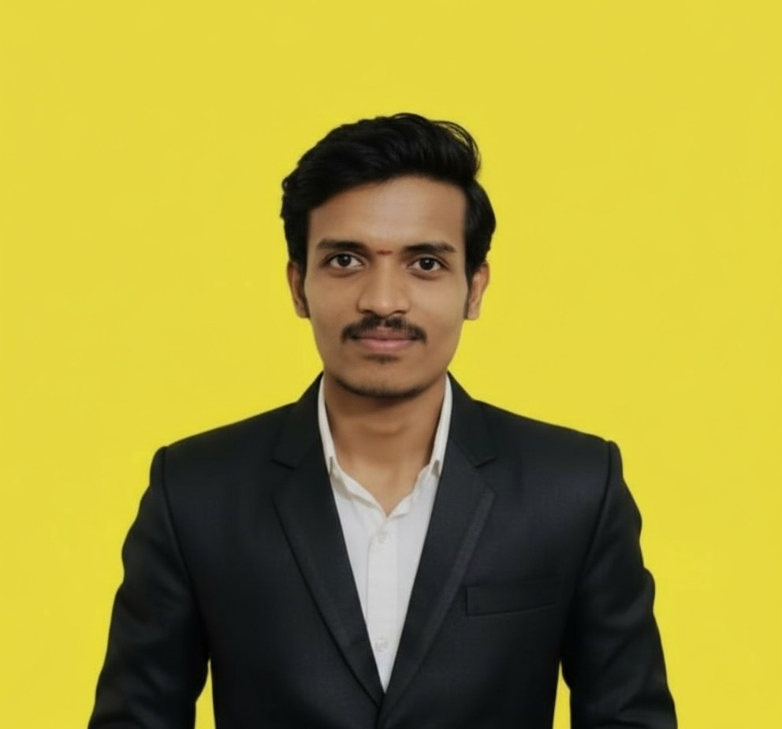

About Me
Hello! I am a passionate full-stack web development learner who enjoys building real-world applications and understanding how systems work behind the scenes.
My Journey
I started my coding journey with HTML and CSS, gradually moving into JavaScript and full-stack development using the MERN stack. Over time, I developed a strong interest in real-time technologies and system behavior.
I have built projects such as a real-time chat application, a video conferencing system (in progress), and a full-stack travel booking platform. I also published an npm package to promote code reusability and better development practices.
Passion & Goals
I am passionate about problem-solving, Data Structures & Algorithms, and building scalable applications. Alongside development, I actively share knowledge by running a LinkedIn community called AlgoHub, where I simplify DSA concepts for beginners.
My goal is to grow as a full-stack developer, contribute to open-source projects, and work on impactful software through internships and collaborative development opportunities.